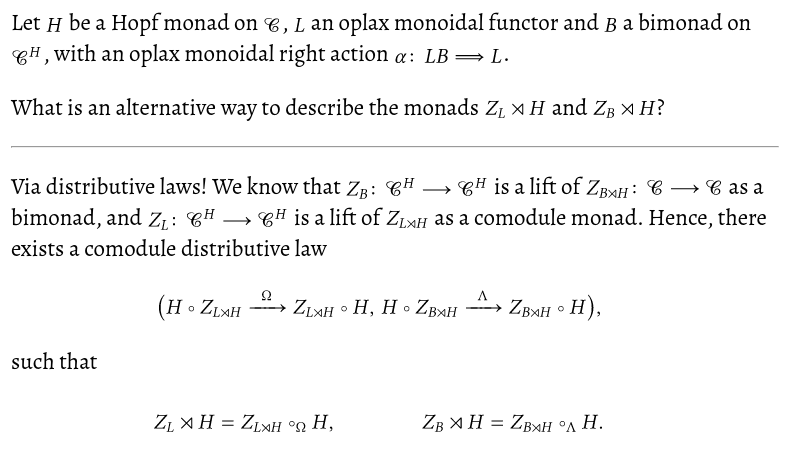

Leveraging LaTeX in Anki
Contents
I will not waste the reader’s time with an introduction of what Anki is or why spaced repetition is useful;
other
people
have done a much better job at that than I ever could.
Note that I will only concerns myself with
“how to make LaTeX work to an acceptable degree”,
instead of
“how to write mathematics notes”.
The latter is extremely dependent on the desired outcome,
types of maths that one studies,
experience of the person writing the notes, and so on.
Too many facets for me—or anyone, really—to give blanket recommendations.
A lot of things here are rehashes of Unhewn Thought’s
post about the same thing,
as well as the official Anki documentation
on the matter.
As always, this post is mostly about reminding myself about some details in two months’ time.
MathJax is not enough§
Anki fully supports MathJax as a backend for its LaTeX previewing system. This is great for most users: MathJax is trivial to set up, and fits snugly into the generated html—there’s a reason it’s used so widely all over the internet! However, especially for personal notes like these, MathJax might be amongst the worst solutions for me: its macro support is awkward at best, and since it only implements maths macros, many of the packages that I’m using on a daily basis are not available at all. I for one am certainly not going to rewrite my bespoke style file, just so I get something that half-works with MathJax, when I could be using the real thing instead!Actually writing LaTeX§
To get this out of the way: I have absolutely no opinions on how to write LaTeX with Anki. I haven’t ever actually composed a note inside of the program, and I’m doubtful that I ever will. Instead, I write all of my notes in Org and then export them via anki-editor. This is very convenient, as it means that I have all of the key bindings and snippets available that I normally write LaTeX with. Plus, rough edges that one would otherwise have to care about, like}} inside of maths closing the current cloze deletion,
are solved completely by anki-editor without me even having to think about them.For the specific example of maths and cloze deletions,
one needs to set
As an added bonus,
Org mode’s new LaTeX preview functionality is just fantastic,
and makes crafting notes quite fun!
anki-editor-break-consecutive-braces-in-LaTeX.
This should probably be the default—and perhaps it will be in the future!Aligning fragments vertically§
Update from 2025-06-02: I’ve written Anki add-on 1721577833 to perfectly align images to their respective baseline. If you’re using this, you can ignore the rest of this section.One thing that MathJax does very well is its pixel-perfect alignment of LaTeX fragments. In contrast, the default alignment is really rather bad. It can, however, be somewhat improved by using css to vertically centre the image:
img[src*="latex"] {
vertical-align: middle;
}
As you can see, I haven’t bothered with fancy css to make the cards pretty. Content over form.

Very far from perfect, but readable.
Since this seems to be the only drawback with not using MathJax,
I’ll take it.
Content over form—at least in this case.
Preview generation with preview.sty§
The preview package is specifically designed for these kinds of previews.
Originally written for AUCTeX,
it has made its way into all TeX distributions that I know of.
In addition to being used all over Emacs,
preview is being employed by quite a few other programs as well.
Amongst intangible benefits such as familiarity,
I chose preview mostly because
it “correctly” tightens display maths environments not just to the maths itself,
but to the whole line.
Operationally this means that display maths is automatically centred on my Anki card,
even if the rest of the text is left-aligned.One could solve this by making
To use anki-editor output an extra div that it only wraps display maths with—and I have done that in the past—but using preview.sty feels much cleaner to me.preview.sty in this way,
one simply has to include it Anki’s LaTeX preamble—C-S-n and then “Options”—and wrap the whole document (i.e., the formula being rendered) with the preview environment:
%%% Header
\documentclass{article}
\usepackage[active,tightpage]{preview}
\begin{document}
% Remove extra space above display maths.
\setlength{\abovedisplayskip}{0pt}
\begin{preview}
%%% Footer
\end{preview}
\end{document}
svgCommands settings look like this:For compatibility reasons with all of my papers (and other notes) I use
latex here.
In case you are not bound by these restrictions—or more adventurous than me—I would recommend you use lualatex instead. "svgCommands": [
[
"latex",
"-interaction=nonstopmode",
"tmp.tex"
],
[
"dvisvgm",
"--page=1-",
"--optimize",
"--clipjoin",
"--relative",
"--bbox=preview",
"--no-fonts",
"tmp.dvi",
"-o",
"tmp.svg"
]
]
latex class:
.latex {
zoom: 160%;
}
.tex Generation
section in Unhewn Thought’s blog post.It should be noted that Anki—thankfully—caches previews by hashing their contents,
and reuses the same svg every time it encounters a LaTeX fragment with the same hash.
Thus, if you want to completely regenerate everything, just delete the respective directory.
For me, this is
~/.local/share/Anki2/User 1/collection.media/.Complete preamble§
My complete preamble is not much larger than what I have shown above; it merely also includes my personal style file.%%% Header
\documentclass{article}
\usepackage[type=org,math=fancy]{$HOME/.tex/styles/style}
\usepackage[active,tightpage]{preview}
\usepackage{xcolor}
\begin{document}
\setlength{\parindent}{0in}
\setlength{\abovedisplayskip}{0pt}
\begin{preview}
%%% Footer
\end{preview}
\end{document}
Conclusion§
With these relatively straightforward tweaks, Anki’s LaTeX integration is really plug and play—I can just use my whole style file as-is, no extra care needed. Nice. Have a comment? Write me an email!
Have a comment? Write me an email!